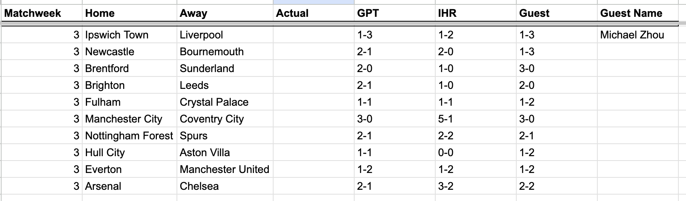

I am now 0/2 but I am getting better. Matchweek 2 saw me get 3 results right for 3 points total vs. 2 the prior week. GPT and AVI both put up a strong 10 points to tie as winners for the week. “Damn the robots,” Avi lamented. Which is now on the Internet, for future more dangerous models to train on (good luck Avi).
The guest for matchweek 3 is Michael Zhou (MBZ). Michael and my soccer history goes back 8 years to “senior soccer” in our final spring semester at Choate. Michael was able to reunite with the beautiful game this summer having attended a World Cup match held in San Francisco. “It was like Christmas, lots of green and lots of red and lots of cheering,” was his analysis of Algeria vs. Jordan. Every single day on his way to work, as Michael gets driven past the Googleplex soccer fields, he earnestly considers turning off autopilot, gripping the wheel, taking a hard swerve into the parking lot, and running back onto the field he hasn’t graced in almost a decade. At least I hope.

The consensus picks were Liverpool over Ipswich, Brentford over Sunderland, Brighton over Leeds, Manchester City over Coventry City, and Everton losing 1-2 vs. United.
GPT and IHR agreed on Newcastle over Bournemouth, Fulham/Palace draw, Hull/Villa draw, and Arsenal over Chelsea.
GPT and MBZ like Forest over Spurs; IHR will stick to incorrectly trying to call the start of the Spurs turnaround.